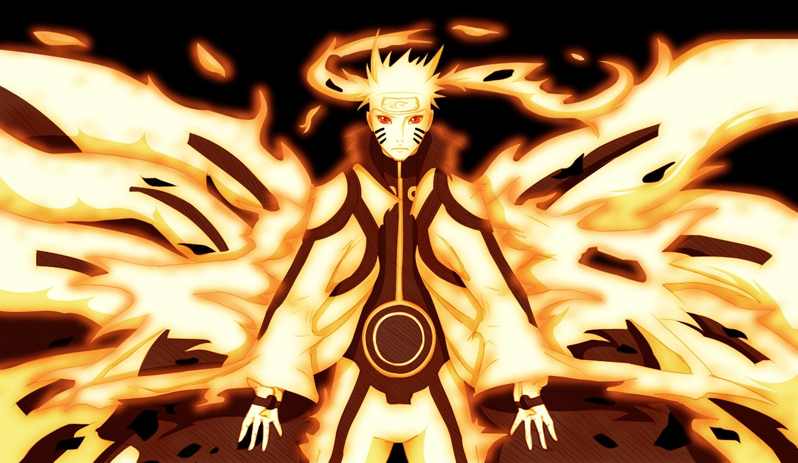
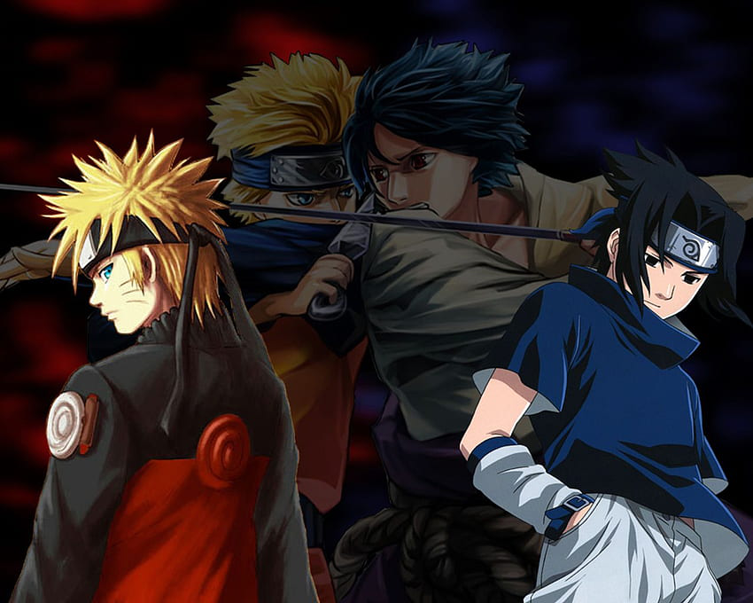
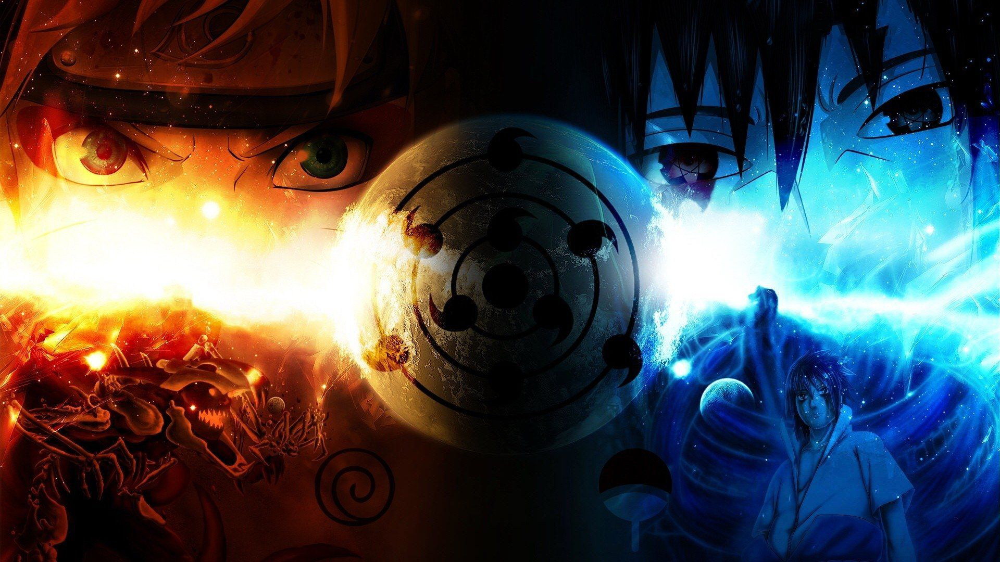
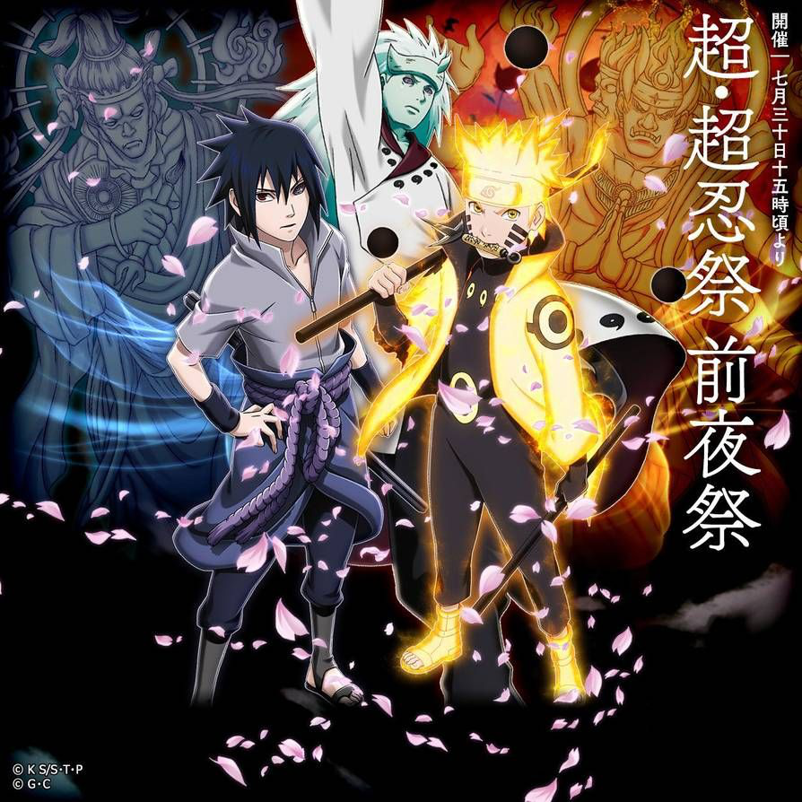
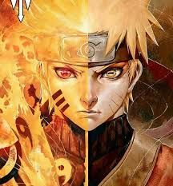
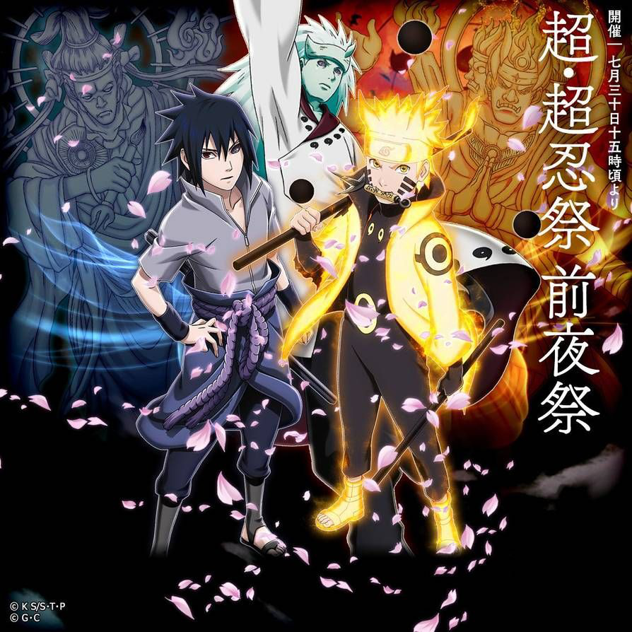
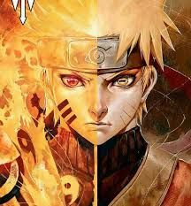
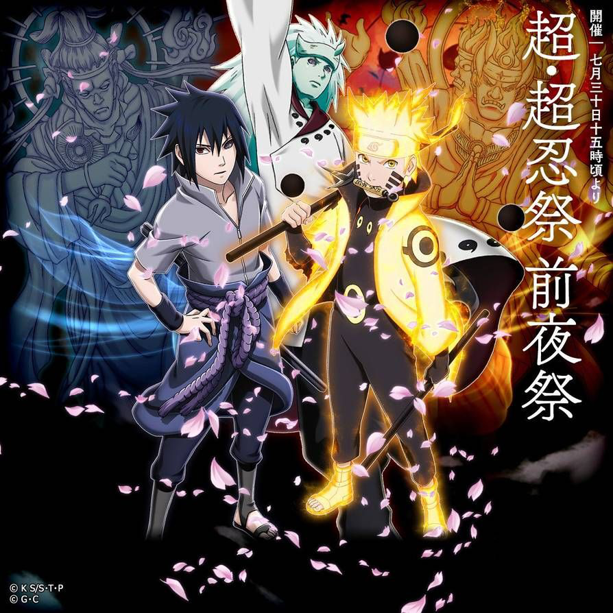
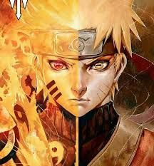

 





Naruto é uma série de mangá japonesa escrita e ilustrada por Masashi Kishimoto. Conta a história de Naruto Uzumaki, um jovem ninja que constantemente procura por reconhecimento e sonha em se tornar Hokage, o líder máximo e mais poderoso de sua vila. A série é baseada em um one-shot de Kishimoto publicado na edição de agosto de 1997 da revista Akamaru Jump.